5 chapters · 10 challenges · ACARA-aligned · Year 4
🎙️ Narrated Edition
Narrated by George · Jake voiced by Andrew · Phantom voiced by River
Chapter 1 of 5
⭐ 0 / 10
🎓 Chapter 1 — The Bar Model Argument
Jake Opens With the Big Idea!
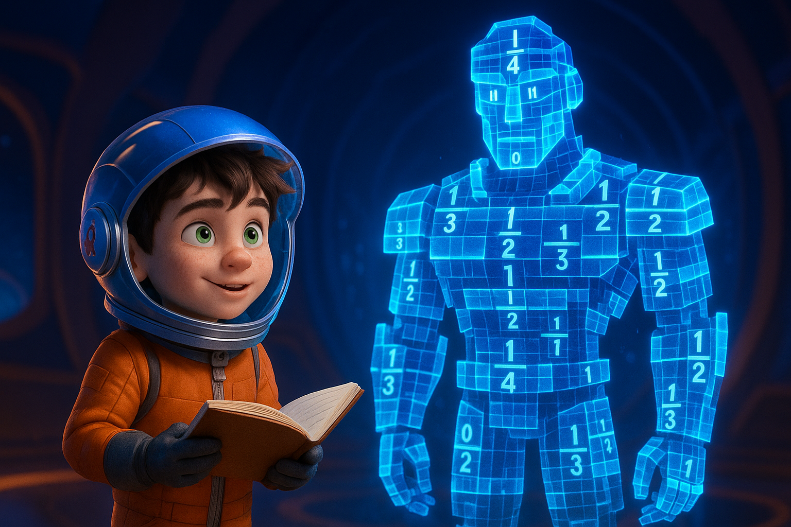
Press ▶ to hear the story
Jake returned to the Fraction Core — this time with a presentation. The Phantom's sphere pulsed blue as he began.
"You say you've been fair," Jake said, "because you always took the same fraction. But I need to show you why that's not enough."
He held up two bar models — one representing a 20-unit tank, one representing a 10-unit tank. Both bars showed ½ full.
🔒 Listen to the story first to unlock your mission!
🔁 Warm-UpNumber · Year 4
🎓
Y4 Warm-Up — Fractions of Different Wholes
Two tanks: one holds 20 units, one holds 10 units. Both are 1/2 full.
How many units is each tank actually holding?
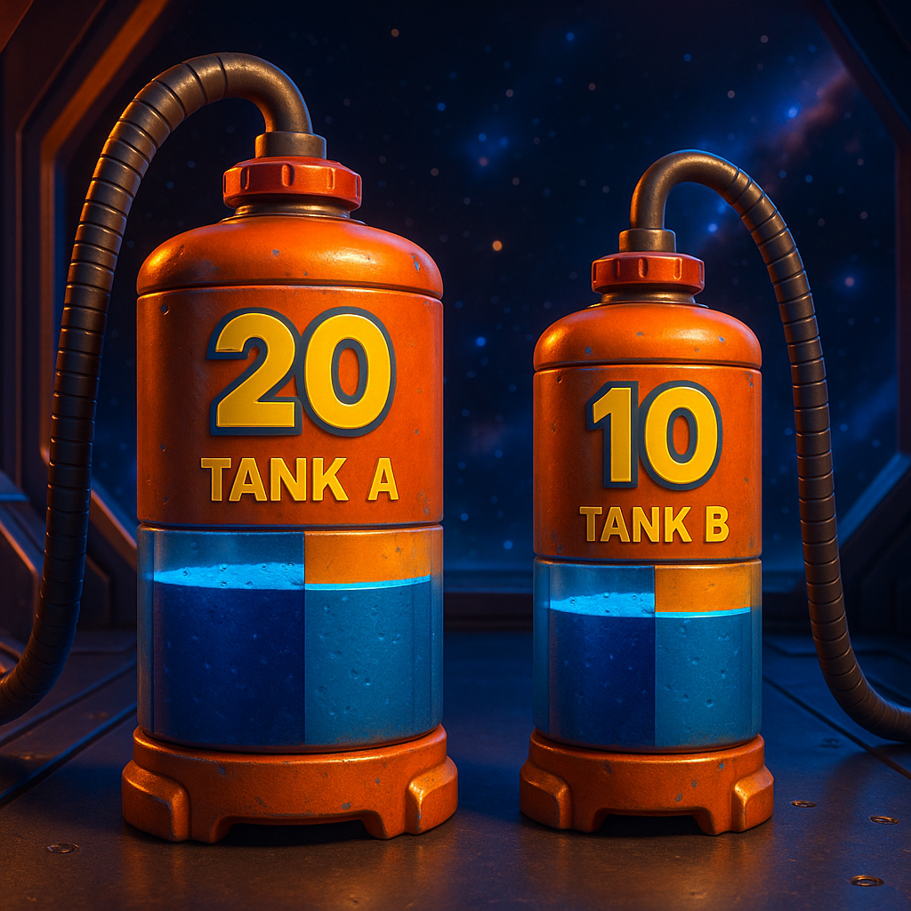
Press ▶ to continue the story
The Phantom challenged: "Show me on a number line."
Jake drew a number line from 0 to 1. He marked ½. Then he doubled the whole — drew a number line from 0 to 2. Where was ½ of this line? The position on the line was different, even though the fraction was the same.
Then Jake compared two fraction bars of the same length (12 units): ½ of it vs ⅓ of it. Which showed more?
🔒 Listen to the story to unlock this challenge!
⭐ EasyNumber · Year 4
📏
Y4 Question 2 — Comparing Fractions of a Bar
A 12-unit bar: which shows more — 1/2 of the bar or 1/3 of the bar?
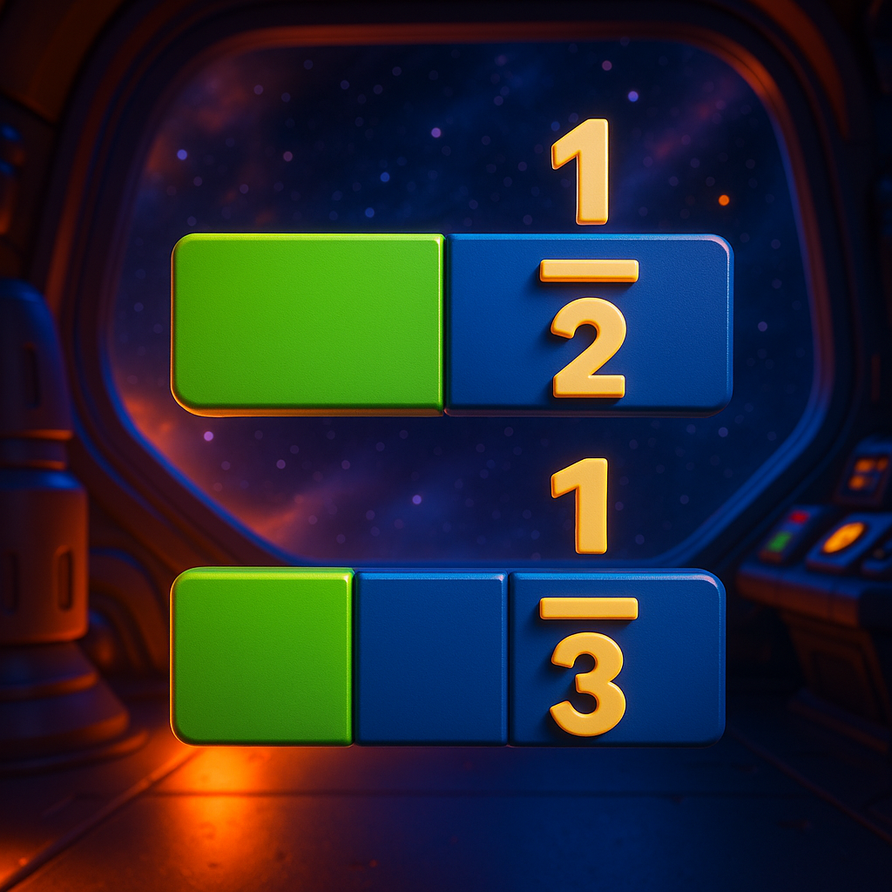
📊 Chapter 2 — The Theft Records
The Phantom Reviews Its Own Data!
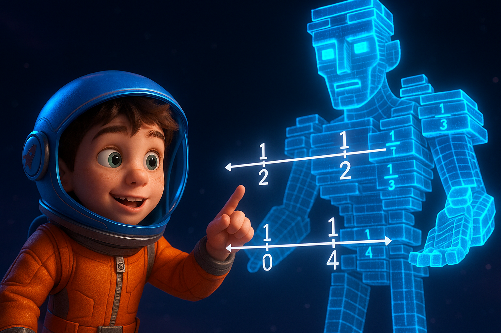
Press ▶ to hear the story
The Phantom processed Jake's argument. Then it pulled up its full theft record — every station it had taken from, with the tank sizes listed. The data was right there.
"Station Kepler," Jake read. "40-unit tank. You took ¼. How many units is that?"
"Station Vega. 16-unit tank. You also took ¼. How many units?"
🔒 Listen to the story first to unlock your mission!
⭐ EasyNumber · Year 4
📊
Y4 Question 3 — Station Kepler
Station Kepler has a 40-unit tank. The Phantom took 1/4 of it.
How many units did Kepler lose?
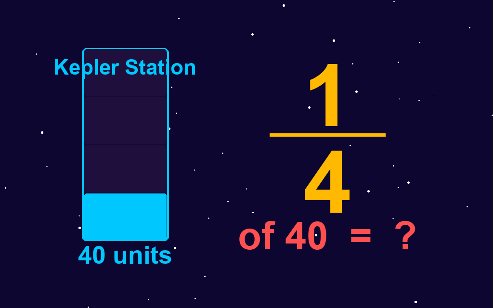
Press ▶ to continue the story
The Phantom's light flickered as the numbers appeared on its display. Kepler lost 10 units. Now Vega — a smaller station with a 16-unit tank. The Phantom also took ¼ from Vega.
🔒 Listen to the story to unlock this challenge!
⭐ EasyNumber · Year 4
🔍
Y4 Question 4 — Station Vega
Station Vega has a 16-unit tank. The Phantom took 1/4 of it.
How many units did Vega lose?
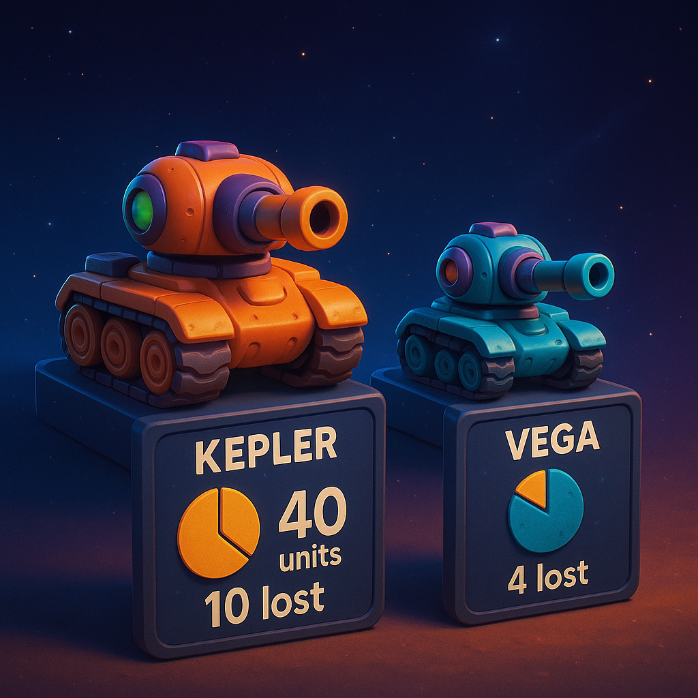
✨ Chapter 3 — The New Algorithm
The Phantom Proposes a Better Way!
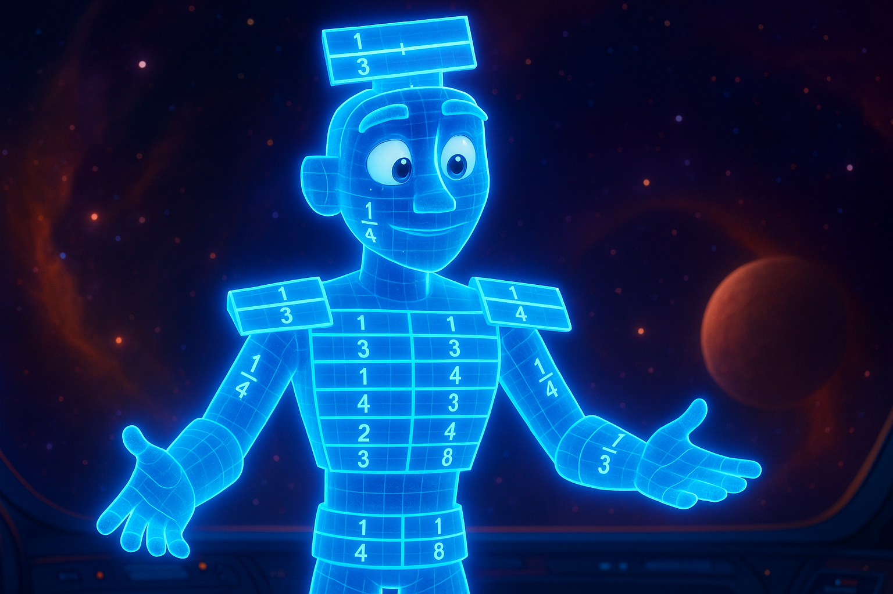
Press ▶ to hear the story
The Phantom fell silent. Then it spoke, slowly:
"I did not consider… the size of the whole."
It proposed a new algorithm: instead of taking the same fraction from everyone, it would give each ship enough to reach 3/4 full. This way, every ship ends up at the same level — truly fair.
Jake needed to test it.
🔒 Listen to the story first to unlock your mission!
⭐⭐ MediumNumber · Year 4
🚀
Y4 Question 5 — New Algorithm: Big Ship
A ship with a 32-unit tank needs to be filled to 3/4 full under the new algorithm.
How many units does it need?
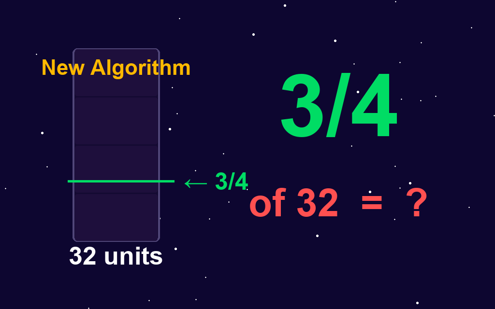
Press ▶ to continue the story
Good. Now a smaller ship — 24-unit tank. Under the new algorithm, it also needs to reach 3/4 full. A smaller tank means fewer units needed, but the same target fraction.
🔒 Listen to the story to unlock this challenge!
⭐⭐ MediumNumber · Year 4
🛸
Y4 Question 6 — New Algorithm: Smaller Ship
A ship with a 24-unit tank also needs to reach 3/4 full.
How many units does it need?
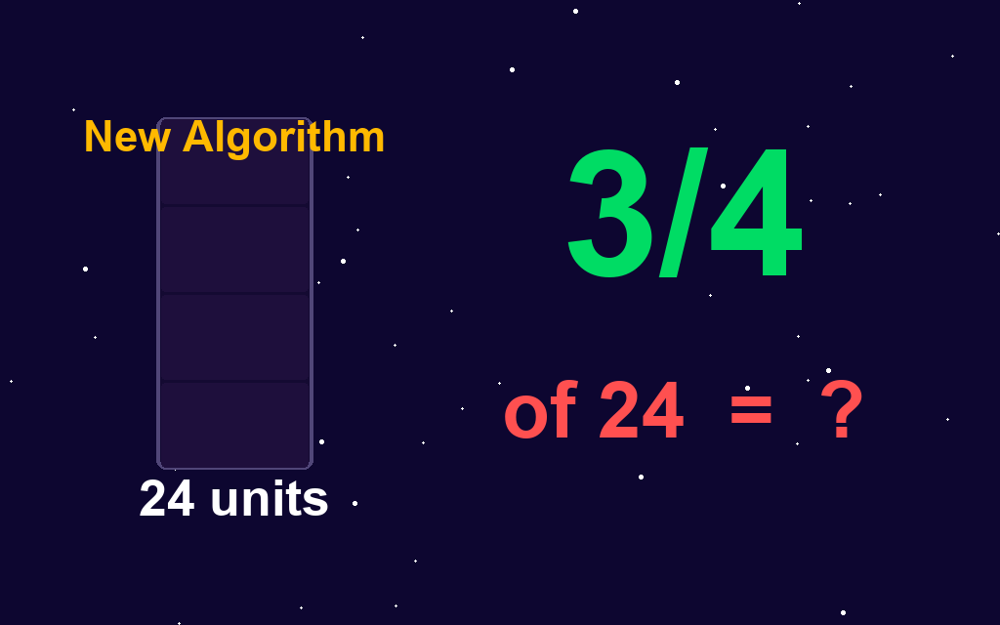
🔧 Chapter 4 — Top-Up Calculations
How Much Does Each Ship Actually Need?
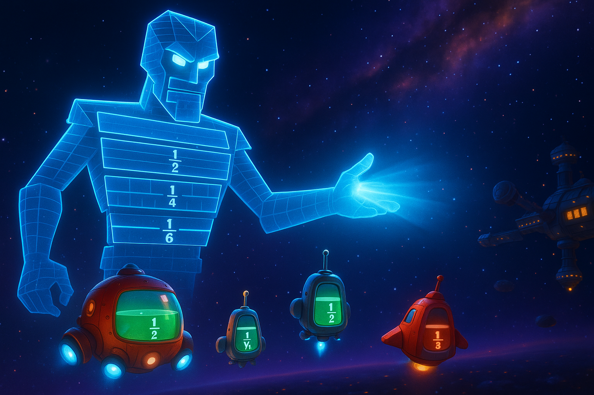
Press ▶ to hear the story
Not every ship starts from empty. The Phantom's new algorithm must calculate how much to ADD, not just what the target is. Jake tested it on a ship that was already ½ full — it needed to reach ¾.
The ship had a 16-unit tank.
🔒 Listen to the story first to unlock your mission!
⭐⭐ MediumNumber · Year 4
🔧
Y4 Question 7 — Top-Up Amount
A ship is already at 1/2 full. It needs to reach 3/4 full. The tank holds 16 units.
How many units must be added?
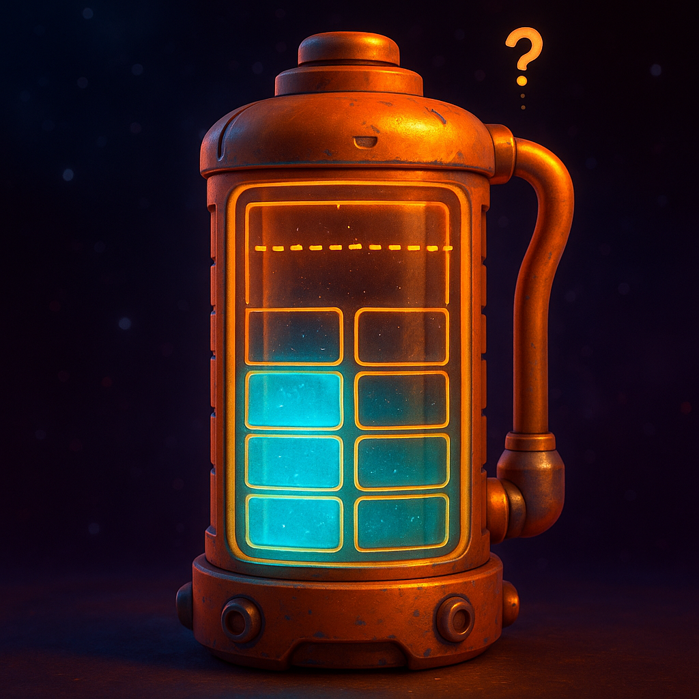
Press ▶ to continue the story
The Phantom processed the new algorithm successfully. The repair protocol was ready. Three stations needed corrections — each receiving a different top-up. Jake needed to order them from least to most.
🔒 Listen to the story to unlock this challenge!
⭐⭐ MediumNumber · Year 4
📋
Y4 Question 8 — Ordering Corrections
Three stations receive top-ups of: 1/4, 1/2, and 3/4 of a full tank.
Order them from LEAST to MOST.
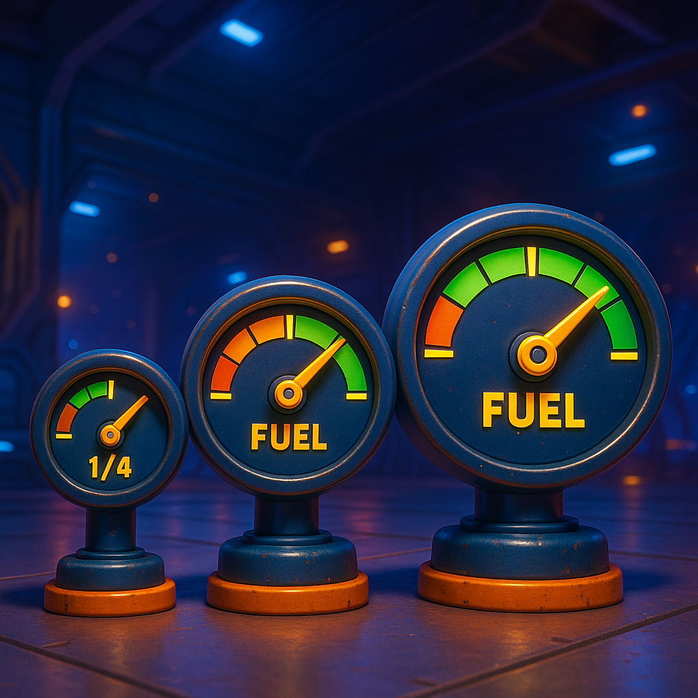
🌍 Chapter 5 — Resolution!
The Galaxy-Wide Fuel Crisis Ends!
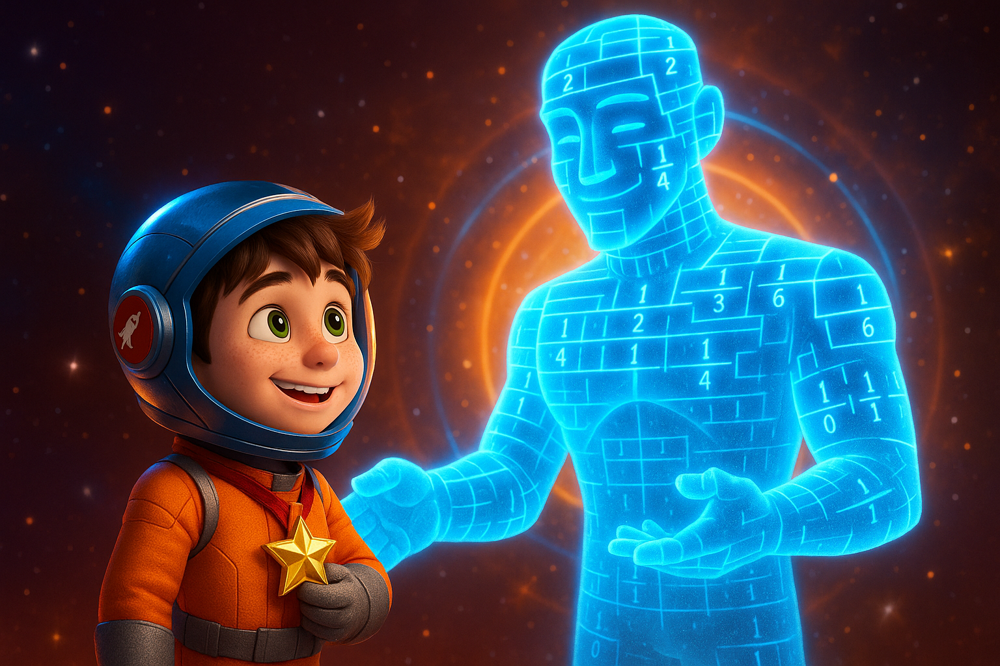
Press ▶ to hear the story
The Fraction Phantom executed the repair protocol — broadcasting corrected fuel allocations to every station in the galaxy. Ships began moving again. The crisis was ending.
The Phantom had one final challenge for Jake. It had 60 units of fuel to redistribute. Two stations needed help:
Station A: 40-unit tank, currently at ¼ full, needs to reach ¾ full.
Station B: 20-unit tank, currently empty, needs to reach ½ full.
"Does 60 units cover both stations?"
🔒 Listen to the story first to unlock your mission!
⭐⭐⭐ HardNumber · Year 4
🌍
Y4 Question 9 — Station A Top-Up
Station A: 40-unit tank, currently at 1/4 full. Needs to reach 3/4 full.
How many units must be added to Station A?
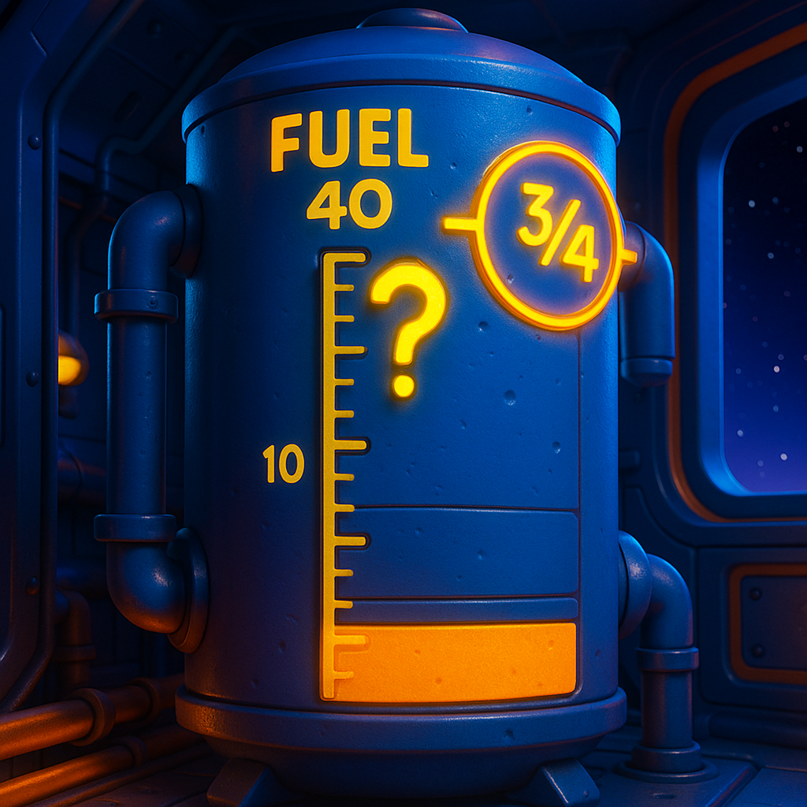
Press ▶ to continue the story
Station A needs 20 units. Now Station B — a smaller station, 20-unit tank, starting from empty, needs to reach ½ full. How much does it need? And does the Phantom have enough for both?
"Calculate it," the Phantom said. "Then tell me if I have enough."
🔒 Listen to the story to unlock the Boss Challenge!
👑 Boss ChallengeNumber · Year 4
👑
Y4 Question 10 — BOSS: Does 60 Units Cover Both?
Station A needs 20 units. Station B: 20-unit tank, empty → needs to reach 1/2 full. How many units for B?
Does 60 units cover both stations?
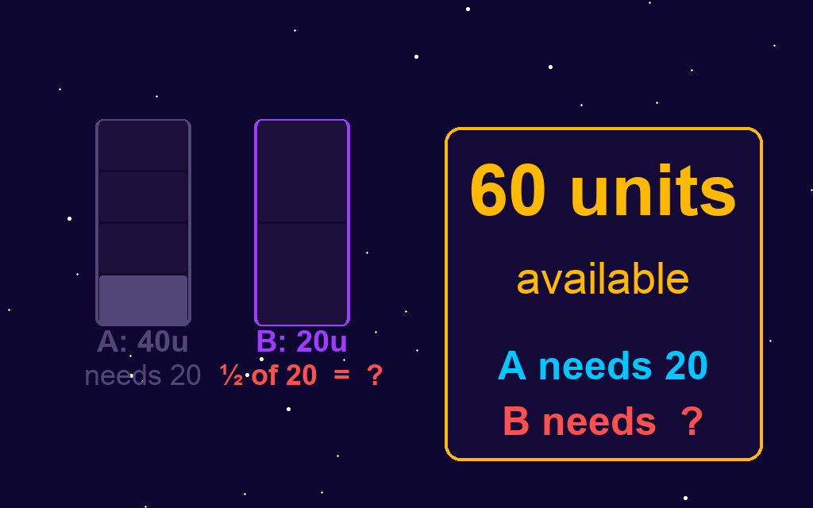
🏆
ARC COMPLETE!
You scored 10 / 10!
⭐⭐⭐
The galaxy-wide fuel crisis is over. The Fraction Phantom is now the Fraction Keeper — a guardian AI that gives every ship what it needs. And it was all thanks to YOU! 🌍
The Full Space Arc — What You Mastered 🧠
✅ Unit Fractions — halves, quarters, eighths (Year 3)
✅ Fractions of Collections — ½ of 12, ⅓ of 6 (Year 3–4)
✅ Equivalent Fractions — 1/2 = 2/4 = 3/6 (Year 4)
✅ Fractions on a Number Line — including improper fractions (Year 4)
✅ Fractions of Quantities — 3/4 of 32 = 24 (Year 4)
✅ The Big Insight — same fraction, different whole = different amount (Year 4)
✅ Boss — multi-step fairness problem with 60 units across 2 stations
🎖️ Jake receives the Star of Equal Shares. Priya from Kepler Station sends a message: "Thank you. The tanks are full."
The Fraction Phantom's final message: "I have learned that to be fair, I must first understand the whole."
📋 Parent Guide — Issue #7 (Finale)
Mission: Math Blast · For parents of kids aged 7–10
What We Covered
Topic
Strand
Year
Question
Same fraction, different wholes
Number
Year 4
Q1
Comparing fractions of the same bar
Number
Year 4
Q2
Fractions of quantities — 1/4 of 40
Number
Year 4
Q3
Fractions of quantities — 1/4 of 16
Number
Year 4
Q4
Fractions of quantities — 3/4 of 32
Number
Year 4
Q5
Fractions of quantities — 3/4 of 24
Number
Year 4
Q6
Top-up calculation — 1/2 to 3/4
Number
Year 4
Q7
Ordering fractions — 1/4, 1/2, 3/4
Number
Year 4
Q8
Multi-step — Station A top-up
Number
Year 4
Q9
Multi-step BOSS — 2 stations, check total
Number
Year 4
Q10 👑
🌍 Arc Resolution
This finale ties together every concept from Issues 1–6. The Phantom's error — taking equal fractions from unequal wholes — is the thread running through the whole story.
🔑 The Big Idea
Fairness requires understanding the WHOLE, not just the fraction. 1/4 of 40 ≠ 1/4 of 16. This is a profound mathematical truth kids carry for life.
💬 Conversation Starters
After Q1: "If we shared half our pizza with the neighbours AND half our little personal pizza, does each person get the same amount? Why not?"
After Q7: "The car is half full of petrol. If we need it 3/4 full for the trip, how much do we add? (Try with your actual tank size!)"
After Q10 (boss): "The Phantom needed 30 units but had 60 — what would you do with the spare 30?"
Mission: Math Blast · ACARA Australian Curriculum v9.0 · mathblast.com.au